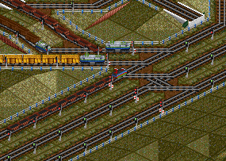
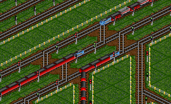
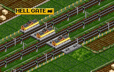
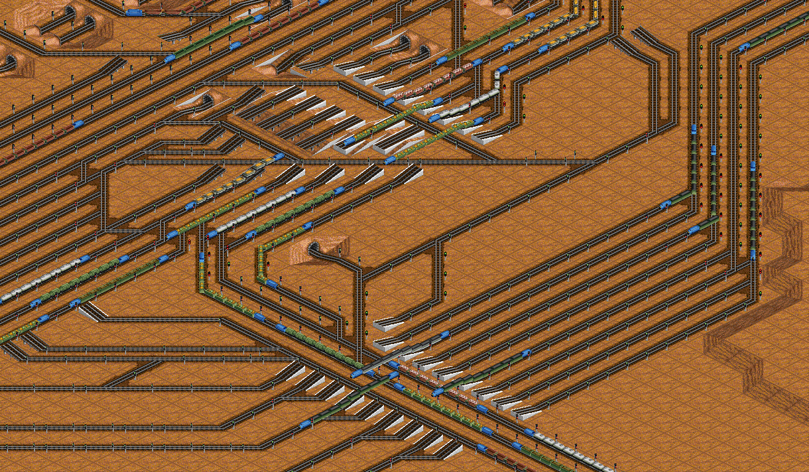
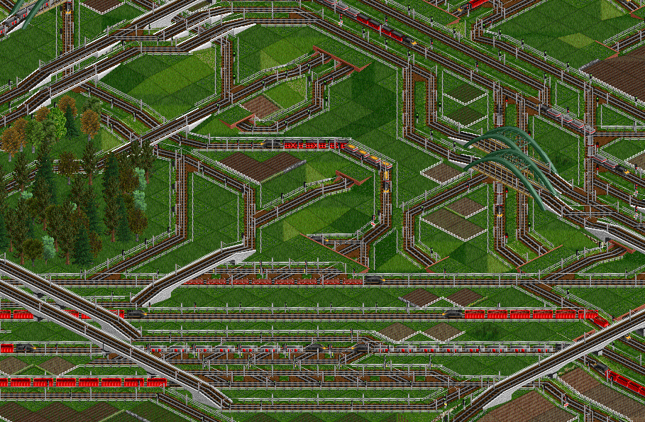
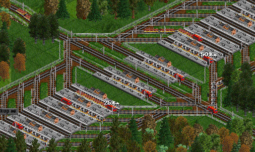

Advanced building revue 03: Path to insanity
Let’s face it. We are insane. (who didn’t know that, please stop reading immediately) This article is aimed to be a bit special. In what way? I am not going to speak about some new concept that is just nuts or show some insane techniques. I would like to show, how about can one get better, and/or how did it look in my case 🙂 The point is – this is something like wiki in practice, only showing the bad things instead of the good ones 😉 but I am sure you will find also some positive inspiration in the savegames :).
![[Ridiculous Mess.]](https://web.archive.org/web/2/http://blog.openttdcoop.org/files/blog/V453000/WeKnowNoOrders Trans, 2076-12-29.png){kind=link}
Start … where the hell to start? Oh, in the beginning… ok, right. As the beginning I will consider that our learning subject (friendly, hyperactive, cute newbie) opened OpenTTD for the first time. What now?
All of us went throught it 🙂 you build a rail, a train. Another train… and now comes the critical moment – you improve, add more. Probably the absolutely most catchy element of our awesome supergeek game. Why do we play? Well ok, we have fun … but why do we have fun? Because we challenge ourselves, try to make something better than last time, make more trains, deliver more cargo, make less sane network. The greatest fact about OpenTTD is it’s creativity. If you want to do something better, you have to improve old stuff, know the possible errors, or just develop some completely new idea. You search for the sites, see what others do, you find #openttdcoop and you discover something you never seen before. At this point, your sanity is very endangered if not entirely lost and you can say goodbye to being “normal”. At this point the story of my article begins 🙂 because you couldn’t read it unless you found this page, right? 😉
The Path
The following part of article is to show you how my path to insanity looked. It’s purpose isn’t to show off how awesome games I had (most of them suck from today’s point of view anyways 😉 ) but to let our new people see through which phases I went and possibly – learn not only from their, but also from my mistakes. I have chosen five savegames, which are with a finished game/relatively good result game. One important note: these savegames are consisting of a very, VERY dirty building style! Don’t copy the stuff, just look how bad it was and try to eliminate my mistakes in your style ;).
Phase 1
Savegame1
In the beginning of this story, I had no idea about #openttdcoop, maybe only wiki.openttd.org, but I never found anything useful there. I just tried – failed – learned ;). Exactly that is game1. Here is visible how I don’t fear using CL1, PBS merging, also signal gaps of 1 are not a good idea. Only luck in this game was that I used trains with max speed of 104, resulting in almost no slowdown in CL1s 🙂 the oldest game I have in my archive at this moment, but that doesn’t mean it is my first! I just don’t have older saves… What to eliminate in this game: Do not use CL1 unless your trains are slower than 88kmh (on rail), also using PBS merges is very inefficient. It also shows what happens if you have no ML/SL hierarchy.

Funny, wrong, bad 🙂


Just mess. 🙂
Phase 2
As time passed, my mind somehow stopped accepting any trainsets, wanting to use only the original one. This lead to faster trains, and of course – to required increase of CL. In this save, game2, you can find the absolutely typical game for me. One drop, where everything is brought. Often resulting in many lanes output and input, newbish PBS merges, and solution of goods pickup by just a waypoint. What to eliminate in this game: PBS merges are very bad, especially with this slowly accelerating trains. It also is wise to use at 2 engines for TL6 original trainset trains, to gain the better acceleration. Also a bad thing is the goods pickup – split the station from the drop. As you can see, I solved it by moving the pickup further than the drop so trains didnt choose it. But in weird situations, they could. 😉 Also, this *style* already has some kind of ML/SL system. You can see how it improved the result by yourself. 🙂

Yet another mess.


And the waypoint, leading towards pickup.

Phase 3
Game3. I wonder if I should comment this one 🙂 Let’s give it a shot… This game was just massive. Huge station, extreme amount of lines. On the other hand … again terrible usage of PBS on merging and very poor balancing of the lines, so many were barely used. These mistakes resulted in making the game just needlessly big. See how much trouble brought connecting the primaries directly to the high traffic lines :). Once again, merging with PBS is B.A.D.

This screenshot perfectly shows the situation. In the centre is the PBS merge, which jammed a whole lot. And if you look elsewhere, the tracks are very empty.

Phase 4
Game4 is very interesting for my article simply because it is a direct response to game3. After I finished game3, I started game4 and obviously – I learned my lesson, using one ML with two ends and connected SLHs to it. Somewhere at this stage, I found #openttdcoop and learned about priorities. Some were also used at this game, helping quite a bit … As you can see, the style got cleaned of some PBS abuse. This improved the flow on the network quite nicely! (of course there still were some remaining ;)) Also: AsiaStars do really not like smaller CLs ;).

The screen that shows this game best. A brutal mess, many CLs, but satisfying look :). Also note my first use of prios ^^.

Phase 5
And the last but not least, fifth game. This was one with Norwegian Trainset. This is the grf I really recommend to all new players who are disoriented in all the trainsets. This time I used TL3, with surprisingly nice result. This game contains a very ridiculous and pathetic feature – network plan 😀 I did a plan for myself. The second ridiculously bad thing is steel pickup, being awarded as totally bad station :).

Fail of the year. Laughing allowed. 😀

Conclusion
These games were followed by many more, and of course better. I will not talk about these simply because there are not that obvious mistakes, making them relatively useless for this article. If you really wanted, you can find some of my games on my user page. I don’t see a reason to write any comments for them, so just ask me on IRC if you need some ;).
To conclude what I wrote… I think everyone walks through mistakes, everyone makes things better based on previously experienced mistakes. And that is what makes OpenTTD so unique, creative and for years amusive game. I hope my mistakes will serve as bad experience for some of you, who read this article. Thank you for reading and: Insanity is near! 😛
Categories: Community News
PAStheLoD April 14, 2010 00:58
It’s always nice to know that even advanced players were beginners 🙂
Also, could you fix the typo (now -> know) in the first line?
planetmaker April 14, 2010 11:36
Nice article. I guess we all went through this phases somewhat 🙂
Ammler April 14, 2010 13:36
you were insane already, don’t blame #openttdcoop for that 😉
nighthawkcm April 14, 2010 19:07
Absolutely love the savegames – some time I will have to ask a few questions on how you build your private networks 🙂
KenjiE20 April 16, 2010 00:19
“And remember: Losing is fun.“
V453000 April 16, 2010 11:23
That fills it nicely, Kenji 🙂
pietballas March 4, 2013 09:35
Hehe, rings a bell of my 1st openttd games too. Since i started reading openttdcoop.org i learned alot. Thanks for this great site 🙂